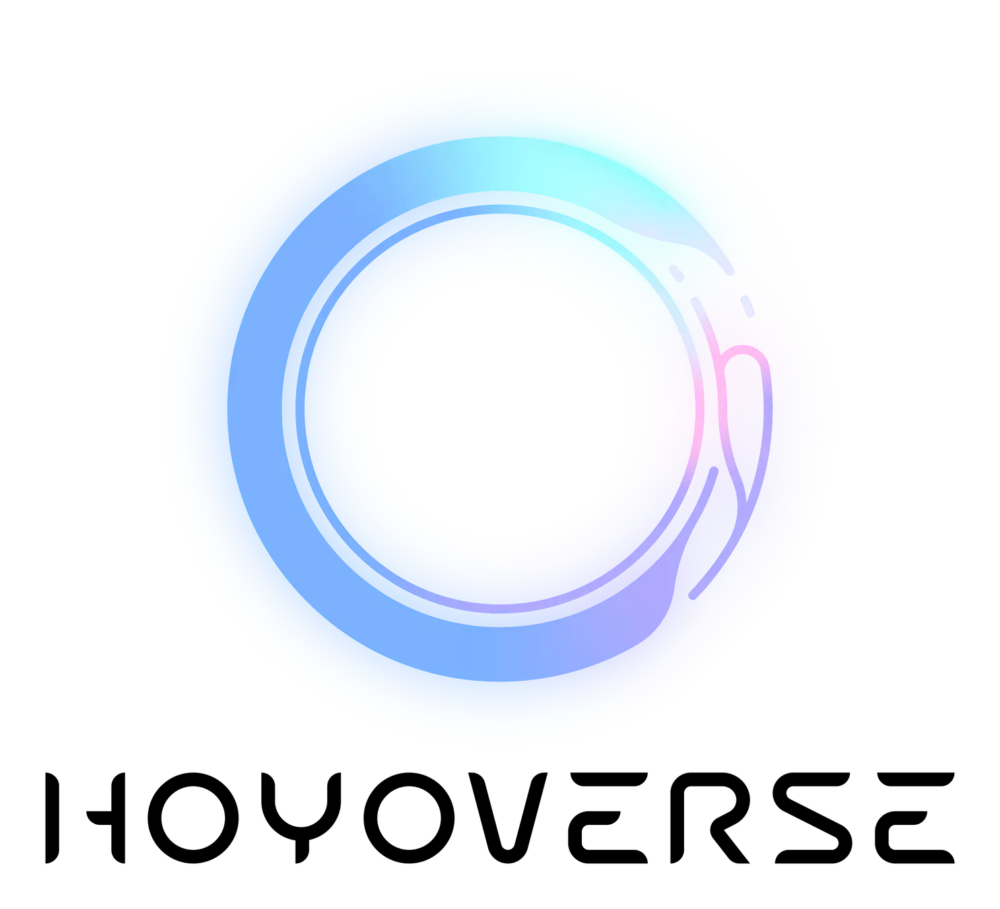
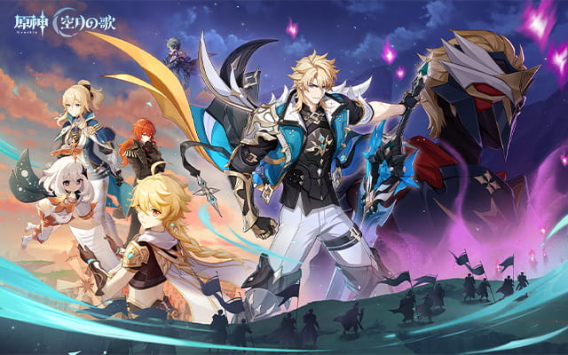
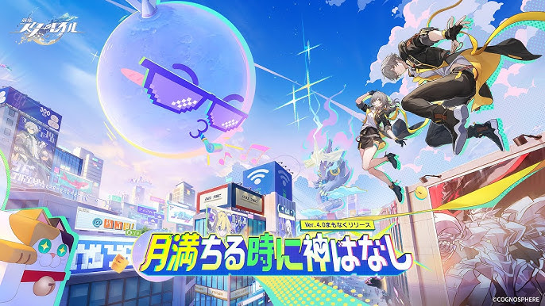
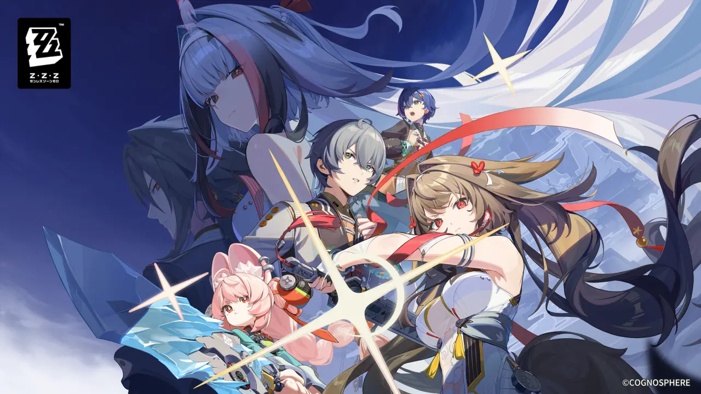
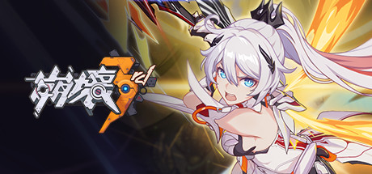

好きなゲーム
HoYoverse

世界的にヒットした『原神』や『崩壊』シリーズで知られる、中国・上海発のゲーム開発・パブリッシングブランドです。
2022年2月に設立され、それまで「miHoYo（ミホヨ）」が展開していたグローバル事業のブランド名称として、没入感のある仮想世界体験を提供することを目的に作られた。
- 主な代表ゲーム
- ・ 『原神』: オープンワールドRPG
- ・ 『崩壊：スターレイル』: 銀河ファンタジーRPG（ターン制）
- ・ 『ゼンレスゾーンゼロ』: 都市ファンタジーアクション
- ・ 『崩壊3rd』: 本格3Dアクションゲーム
- ・ 『未定事件簿』: 乙女・恋愛アドベンチャーゲーム
詳細
- ジャンル： オープンワールド・アクションRPG
- プラットフォーム： PC, PS5, iOS, Android, Xbox
- 特徴： 広大な「テイワット」大陸を自由に探索し、元素（属性）を駆使した戦闘やパズルを楽しめる
- プラットフォーム: PC、iOS、Android、PS5
- 特徴:
・キャラの属性や「運命（役割）」を意識した編成が重要です。
・通常攻撃でスキルポイント（SP）を貯め、強力な戦闘スキルで消費する、パーティ全体で共有するSPの管理がバトルの鍵となります。
・オートモードや倍速機能があり、手軽に育成や周回が可能です。 - プラットフォーム： PS5、PC、iOS、Android
- 特徴:
・3人1組のチームで、キャラクターの切り替え、回避、パリィ（受け流し）、連携スキルを駆使した爽快感のあるアクション
・獣人からアンドロイド、スタイリッシュなキャラまで、個性的なエージェントたちが多数登場
・終末世界でありながら、ポップで近未来的なネオン街の雰囲気（都市ファンタジー） - プラットフォーム： PC、iOS、Android
- 特徴:
・キャラクターの切り替え、QTE（クイックタイムイベント）、極限回避を駆使する爽快な3Dアクション
・第一部（完結）から続く物語は非常に高く評価されており、第2部からは新しい舞台や物語が展開中。
・崩壊という災いに対抗する少女たちの物語を描き、第2部からはオープンワールド要素が強化
原神

圧倒的なクオリティのグラフィックと自由度の高い冒険が魅力のオープンワールドRPGです。
2020年のリリース以来、世界中で爆発的な人気を誇る基本無料ゲーム（アイテム課金制）です。
崩壊スターレイル

スペースファンタジーRPGです。
プレイヤーは銀河を旅する「開拓者」となり、星穹列車で未知の惑星を巡り、戦略的なターン制コマンドバトルや美麗なアニメ調グラフィックで紡がれるストーリーを楽しめます。
ゼンレスゾーンゼロ

都市ファンタジーアクションRPGです。
「プロキシ」と呼ばれる怪異・災害の調査員として、人々を「ホロウ」から救出したり、都市の謎を解き明かす。
崩壊3rd

美麗な3Dグラフィックと爽快な高速アクションが特徴のSFアクションRPGです。
『原神』や『崩壊：スターレイル』を手掛けるmiHoYo（HoYoverse）の3Dアクションゲームの基礎となった作品。世界観や設定が共通している部分もあります。